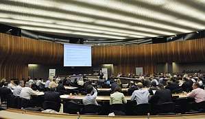
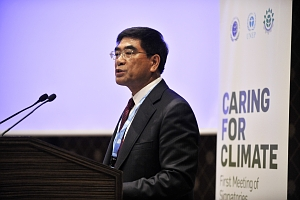
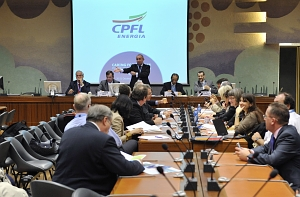

Home / Issues / Environment / Caring for Climate / Caring for Climate Meeting of Signatories
The UN Global Compact in cooperation with the UN Environment Programme (UNEP) and the World Business Council for Sustainable Development (WBCSD) convened the first meeting of Caring for Climate signatories on 20-21 October 2008 at UN Headquarters in Geneva. The meeting brought together 150 business executives, government representatives, UN officials and climate experts involved in designing the post-Kyoto climate framework.

The meeting aimed at reviewing and discussing how Caring for Climate can help companies to advance practical solutions, share learning, innovate and shape public attitudes. Opening addresses were delivered by the heads of the three partners behind the initiative: Georg Kell, Executive Director of the UN Global Compact, Björn Stigson, President of the World Business Council for Sustainable Development and Sylvie Lemmet, Director of the Division of Technology, Industry and Economics, UN Environment Programme.
The Caring for Climate Series was introduced, and preliminary findings from several of the cutting-edge studies were presented. GlobeScan President Doug Miller presented findings from the 2008 Survey of Caring for Climate signatories, taking stock of actions taken by signatories to combat climate change and highlighting best practices and expectations for post-Kyoto policy frameworks. Andrew Howard, Executive Director of Goldman Sachs Global Investment Research division presented a study titled "Technologies, Policies and Competitiveness for a Lower Carbon Economy," forecasting how competitiveness in major business sectors may be affected by climate trends and related policy responses. Dr. Robert Bailies from the the Yale University School of Forestry and Environmental Studies presented a study tracking the progress of signatories by looking at energy efficiency and carbon emissions. Malini Mehra, CEO and Founder of the Centre for Social Markets, presented a study of emerging leadership in developing economies particularly highlighting corporate climate strategies in India, China and Brazil. Jean Laville, Director of the Ethos Fund, presented perspectives from the the investor community particularly how the finance sector can be leveraged on this agenda.

Fu Chengyu, Chief Executive Officer, China National Offshore Oil
Corporation,
speaking on the challenges, opportunities and the future development of Caring for
Climate
Three parallell workshops were organized to enable participants to interact and discuss the themes presented in the plenary presentations: Best Practices and Policy Frameworks; Investments, Technologies and Policies, and; Emerging Leadership in Developing Economies. The workshops were designed to enable participants to take stock of the progress made and share experiences in implementing climate strategies, lowering risk exposure and increasing business opportunities. Participants were asked to develop key recommendations for business and government action.

During the closing plenary, Erik Rasmussen, CEO of Monday Morning and the Founder of the Copenhagen Climate Council, informed participant about the World Business Summit on Climate Change taking place in Copenhagen, Denmark, on 24-25 May 2009. This Summit, taking place six months prior to the UN Climate Conference (COP15) where the post-Kyoto treaty will be negotiated, will bring together business leaders with other stakeholders to put foreward recommendations for the new international framework on climate change. More information about the intergovernmental process leading to the COP15 was subsequently presented by Haldor Thorgeirsson, Director, Bali Road Map Support, UNFCCC.
The closing keynote address was delivered by Janos Pasztor, Director of the UN Secretary-General's Climate Change Support Team.
The meeting was convened with the generous support of Broad Air Conditioning, CPFL Energia and EDF.
Resources and Outcomes
|
Presentations
Presentation of Working Group Recommendations
|
Contact
Lila Karbassi
karbassi@un.org
+1-917-367-5767
(Last update 3 November 2008)